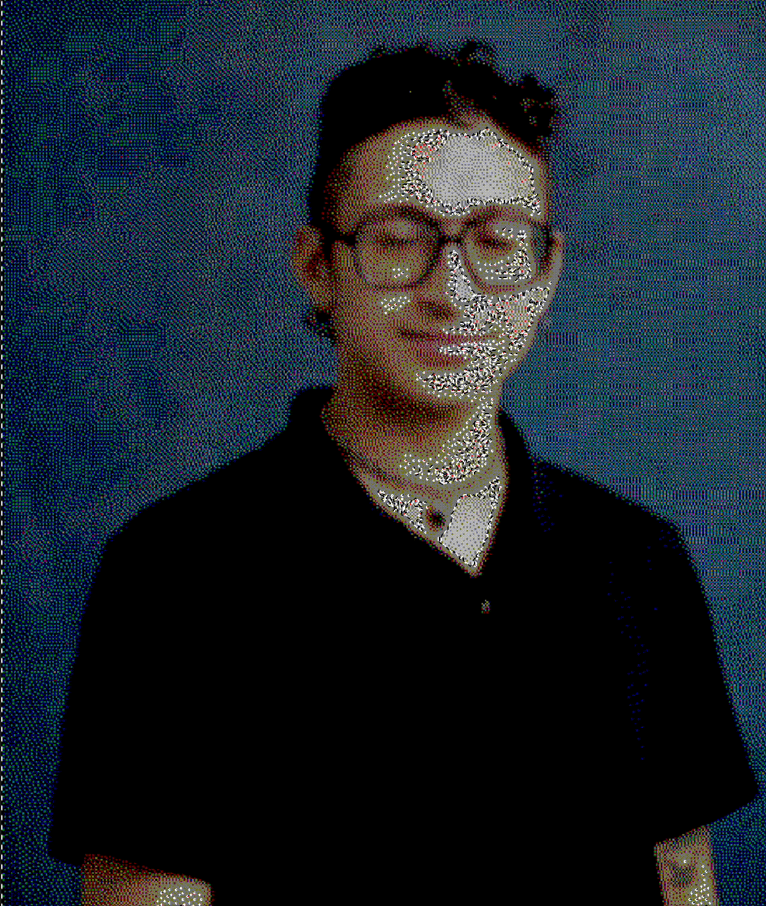

Azad Namazie (they/he) is a poet, performance artist, and digital archivist from Los Angeles, CA. Their artistic practice spans browser-based performances, hypertextual poetry, and time-based media works, interfacing with fantasies of sovereignty, decay, and intimacy in the shadow of empire. Through these forms, their work reflects on the slippages and contradictions between memory, technology, and spirituality.
They have processed, preserved, and made accessible audiovisual and born-digital collections at community archives and academic institutions including the Skid Row History Museum & Archive, the Los Angeles County Museum of Art, Viet Rainbow of Orange County, UCLA Center for Oral History Research, and UCLA Digital Library Program. They currently serve as the digital archivist at UCLA Library Special Collections.

This website was hand-coded in html/css and has no tracking or analytics.
✦I am open to collaborations!
|
You can contact me at anamazie@proton.me